Shining a Light on Daytime Coral Spawning Synchrony Across Oceans
A GLM Case Study
Author
Affiliation
Andreas Eich
Université de la Polynésie française UE 6.7 Biostatistiques 2
Context
This analysis explores coral (Porites rus) spawning timing patterns across different habitats and islands in French Polynesia. We’ll investigate whether spawning behavior varies by environmental factors using generalized linear models.
Reference: Moritz et al. (2025). Shining a light on daytime coral spawning synchrony across oceans. Global Ecology and Biogeography, 10.1111/geb.70072
Data source: SEANOE (10.17882/105886)
Load Packages and Data
Load packages needed
library(tidyverse)
── Attaching core tidyverse packages ──────────────────────── tidyverse 2.0.0 ──
✔ dplyr 1.1.4 ✔ readr 2.1.5
✔ forcats 1.0.0 ✔ stringr 1.6.0
✔ ggplot2 4.0.1 ✔ tibble 3.3.1
✔ lubridate 1.9.4 ✔ tidyr 1.3.2
✔ purrr 1.2.1
── Conflicts ────────────────────────────────────────── tidyverse_conflicts() ──
✖ dplyr::filter() masks stats::filter()
✖ dplyr::lag() masks stats::lag()
ℹ Use the conflicted package (<http://conflicted.r-lib.org/>) to force all conflicts to become errors
library(here)
here() starts at /Users/andi/Documents/PhD/stats/teaching/2026_biostatistiques_2
library(performance)library(modelbased)
Load dat_sites. This data set gives an overview of spawning at different parts of the word:
Rows: 159 Columns: 12
── Column specification ────────────────────────────────────────────────────────
Delimiter: ","
chr (5): country, island, site, habitat, season
dbl (6): depth, latitude, longitude, h_start, h_sunrise, h_after_sunrise
date (1): date
ℹ Use `spec()` to retrieve the full column specification for this data.
ℹ Specify the column types or set `show_col_types = FALSE` to quiet this message.
Figure 1B
Have a look at the data set: Which columns exist? Remember, you can use str() to get an overview or click on the table in the environment tab to the right.
No, let’s recreate Figure 1B of the publication. We only focus on the exact data.
Make a new data set and filter it for the “Lagoon” habitat (filter())
Create a summary data frame by grouping your lagoon data set by the column island and calculate with summary() the mean and standard deviation (sd()) of h_after_sunrise (the hours after sunrise).
Warning: Removed 4 rows containing missing values or values outside the scale range
(`geom_segment()`).
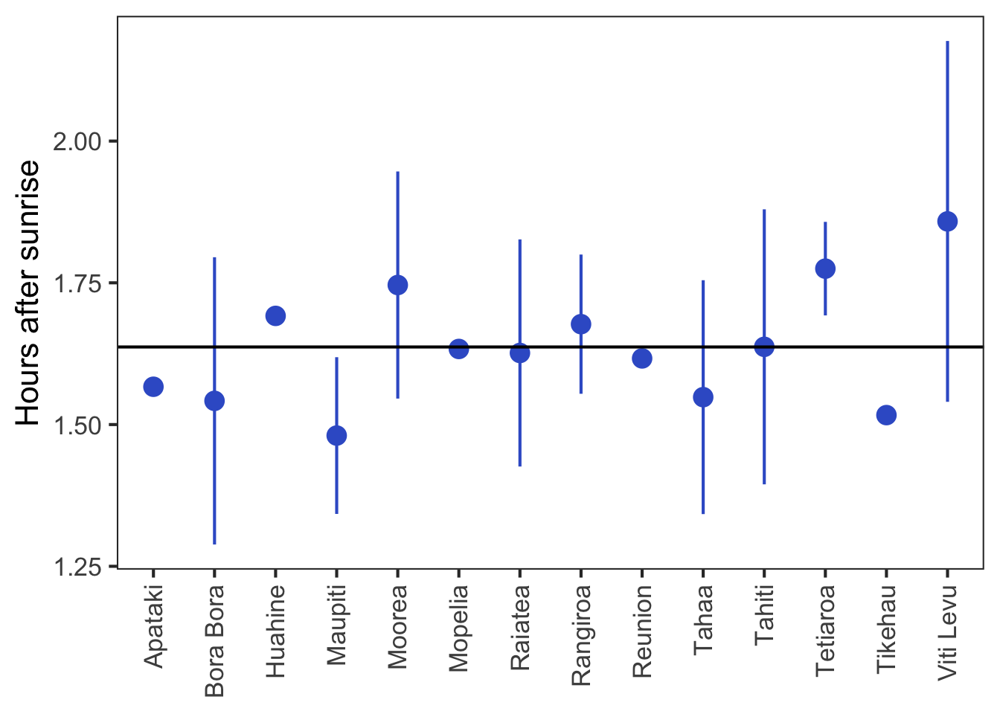
What do you see?
Figure 2A
Now, lets try to better understand the variability by recreating Fig. 2A. Spawning is often synchronised by light intensity. Therefore above, the hours after sunrise were used. Spawning time may also be impacted by the habitat, i.e. Channel, Lagoon, or Outer slope. Now, let’s verify this. Plot the start time (h_start, in “decimal hours”) on the y axis against the time of sunrise on the y axis (h_sunrise).
The data was collected at different habitats: Channel, Lagoon, Outer Slope. To see how this impacted spawning time use different colours for the different habitats in column habitat.
col_hab <-c("Channel"="#401801","Lagoon"="#3A848C","Outer slope"="#465E8C")dat_sites %>%ggplot(aes(y = h_start, x = h_sunrise, fill = habitat)) +geom_point(shape =21) +labs(y ="Time start", x ="Time sunrise", fill ="Habitat") +scale_fill_manual(values = col_hab) +theme_test(base_size =16)
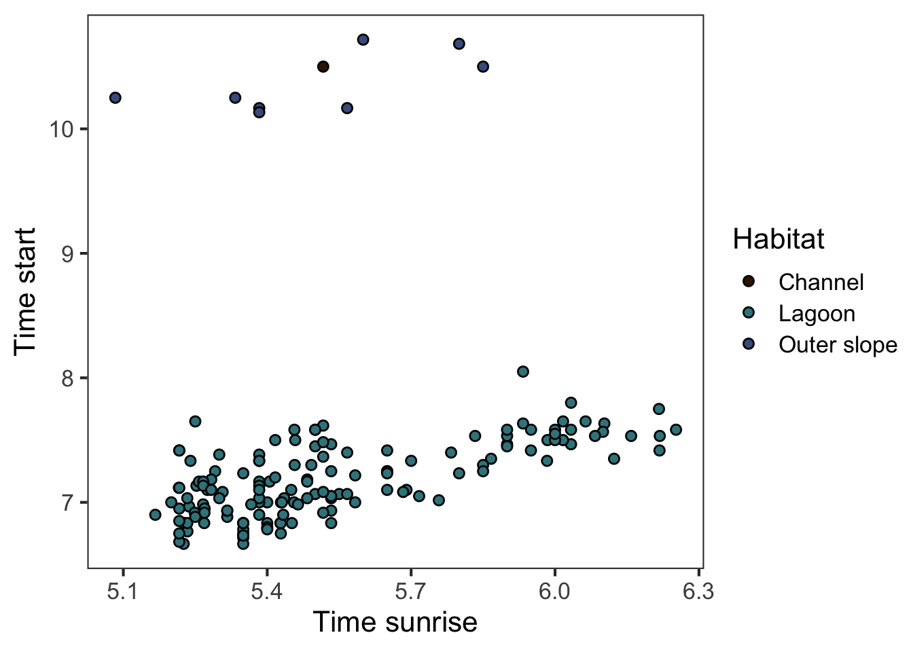
This calls for a regression!
With an ANCOVA, we can see if the relationship differs between “Lagoon” and “Outer slope”. There is only one observation for “Channel”, so we have to ignore it. First, create another data set without (!=) the Channel habitat using filter():
Which explanatory varaibles have a signficant impact on h_start?
What do you think, is it useful to keep the interaction in the model?
Now, let’s check the assumptions with check_model():
check_model(lm_sr_hab_int)
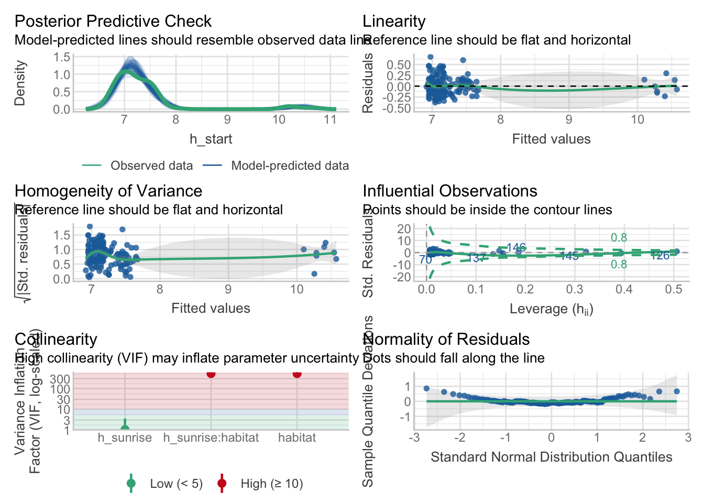
Do you think that the residuals are normally distributed?
Now let’s make a second model without the interaction and see if the residuals are normally distributed:
lm_sr_hab <-lm(h_start ~ h_sunrise + habitat, data = dat_sites_sel)check_model(lm_sr_hab)
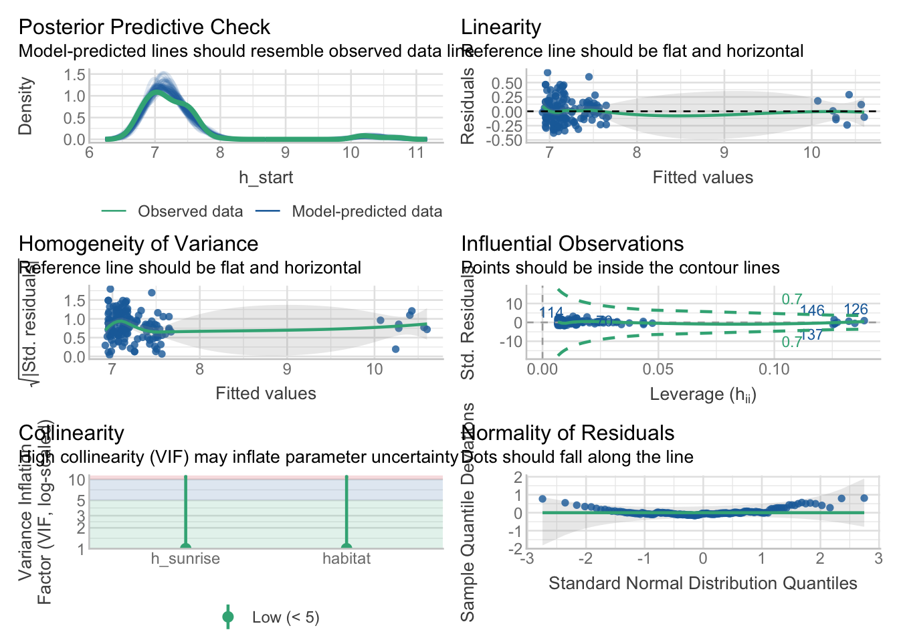
That still does not look good!
But wait, all observations are positive, time cannot be negative! Which type of GLM would you use?
Use check_model() to see if the residuals fit better to the distribution you chose.
First, use the interaction as explanatory variable, it could be that the change of the distributions leads to a change in p-values. If the interacion is not significant, I would use a model with the additive efects of h_sunrise and habitat.
Which model would you use in a publication? The linear model or the GLM? Interaction or addititve effects?
We can now add the regression lines and the confidence intervalls to Fig 2A. To do so, first create a data frame with the model predictions using estimate_relation() and the model you chose:
pred_glm_sr_hab <-estimate_relation(glm_sr_hab)
We can now add this to the figure we created further above. Have a look at the prediction dataframe you just created. What column should be used for the regression line (in a geom_line() layer), what is is columns defining the confidence intervals (in a geom_ribbon() layer)? Add them to the ggplot function. Remember to use the summary data for these two layers.
dat_sites %>%ggplot(aes(y = h_start, x = h_sunrise, fill = habitat)) +geom_ribbon(data = pred_glm_sr_hab,aes(ymin = CI_low, ymax = CI_high, y =NULL),alpha = .3,show.legend = F ) +geom_line(data = pred_glm_sr_hab,aes(y = Predicted, col = habitat),show.legend = F ) +geom_point(shape =21) +labs(y ="Time start",x ="Time sunrise",fill ="Habitat",col ="Habitat", ) +scale_colour_manual(values = col_hab) +scale_fill_manual(values = col_hab) +theme_test(base_size =16)
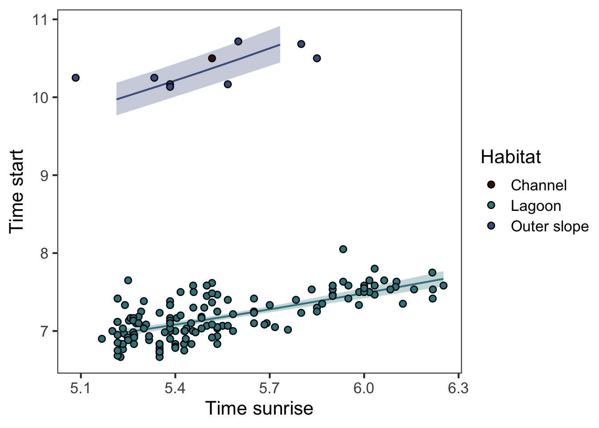
So, as a summary, so far we learned that the time of spawing is around 1.6 h after sunrise. The spawning time is significantly correlated to the time of sunrise. This means that the later the sunrise, the later the spawnign time. This relation does not differ betwen Outer slope and Lagoon, although the spawning time is much later in the Outer slope than in the Lagoon. We can formally test this with a post-hoc test using estimate_contrasts():
estimate_contrasts(glm_sr_hab, p_adjust ="tukey")
We selected `contrast=c("habitat")`.
Marginal Contrasts Analysis
Level1 | Level2 | Difference | SE | 95% CI | t(155) | p
-------------------------------------------------------------------------
Outer slope | Lagoon | 3.23 | 0.11 | [3.01, 3.44] | 29.20 | < .001
Variable predicted: h_start
Predictors contrasted: habitat
Predictors averaged: h_sunrise (5.5)
p-value adjustment method: Tukey
Contrasts are on the response-scale.
Look what the p-value actually means, try to understand the yellow text: “Predictors averaged: h_sunrise (5.5)”. At which point on the regression line were the two habitats compared? How much later is the spawning on average in the Outer reef?
To simplify things, we can concentrate on the the time after sunrise (h_after_sunrise), since we know that the spawnign time and sunrise is significantly correlated. This lets us visualise the difference like this:
dat_sites %>%ggplot(aes(y = h_after_sunrise, x = habitat, fill = habitat)) +geom_violin(alpha = .7, col =NULL) +geom_jitter(shape =21, width = .2, alpha = .7) +labs(y ="Hours after sunrise", x =NULL) +coord_flip() +scale_fill_manual(values = col_hab) +theme_test(base_size =16) +theme(legend.position ="none")
Warning: Groups with fewer than two datapoints have been dropped.
ℹ Set `drop = FALSE` to consider such groups for position adjustment purposes.
Warning in geom_violin(alpha = 0.7, col = NULL): Ignoring empty aesthetic:
`colour`.
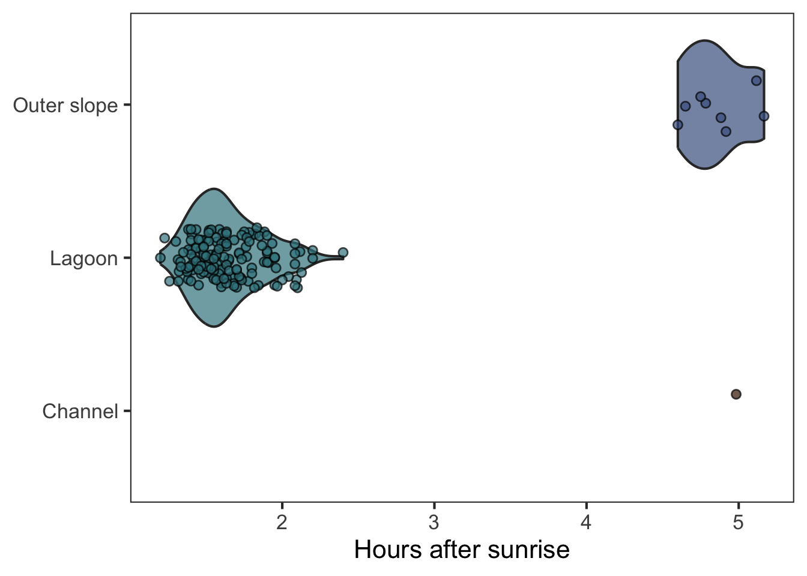
So let’s test differences here with ANOVA, ie comparison of groups:
Use the same dataset from the regression above (i.e. excluding the single Channel observation) and make a model using h_after_sunrise as response and habitat as explanatory variable. Consider what you learned above about a suitable distribution. Do this yourself:
Make model
Check assumptions with check_model()
Test if habitats differ significantly with anova()
Predict data using estimate_means()
Add the estimated mean and CIs as a geom_pointrange() layer
dat_sites %>%ggplot(aes(y = h_after_sunrise, x = habitat, fill = habitat)) +geom_violin(alpha = .7, col =NULL) +geom_jitter(shape =21, width = .2, alpha = .7) +geom_pointrange(data = pred_glm_hab,shape =21,col ="grey30",aes(y = Mean, ymin = CI_low, ymax = CI_high, col = habitat) ) +labs(y ="Hours after sunrise", x =NULL) +coord_flip() +scale_fill_manual(values = col_hab) +scale_colour_manual(values = col_hab) +theme_test(base_size =16) +theme(legend.position ="none")
Warning: Groups with fewer than two datapoints have been dropped.
ℹ Set `drop = FALSE` to consider such groups for position adjustment purposes.
Warning: No shared levels found between `names(values)` of the manual scale and the
data's colour values.
Warning in geom_violin(alpha = 0.7, col = NULL): Ignoring empty aesthetic:
`colour`.
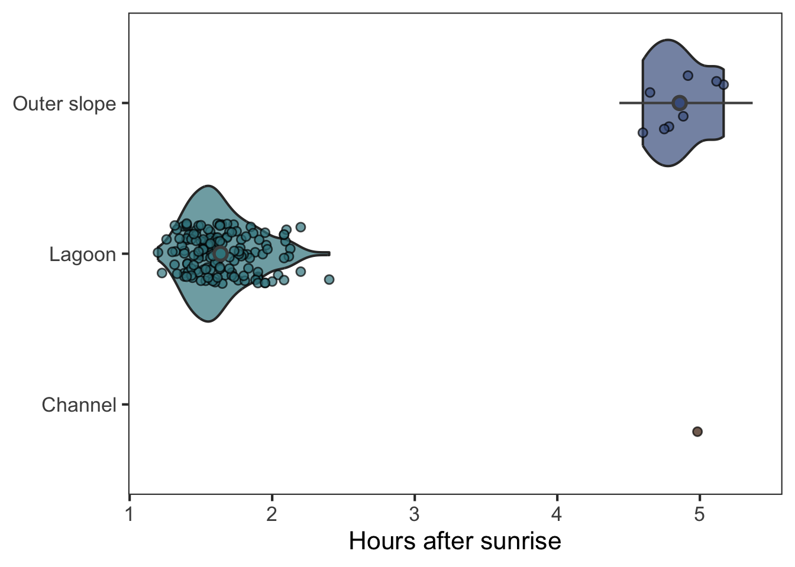
As before, you can use estimate_contrast() to calculate the difference of the spawning time between Lagoon and Outer slope:
estimate_contrasts(glm_hab)
We selected `contrast=c("habitat")`.
Marginal Contrasts Analysis
Level1 | Level2 | Difference | SE | 95% CI | t(156) | p
-------------------------------------------------------------------------
Outer slope | Lagoon | 3.22 | 0.24 | [2.76, 3.68] | 13.69 | < .001
Variable predicted: h_after_sunrise
Predictors contrasted: habitat
p-values are uncorrected.
Contrasts are on the response-scale.
Why does is slightly differ to the difference calcualted above?
Figure 2B
The spawning time may also be impacted by the depth. Let’s plot it as in Fig. 2B. Use depth as x axis, h_after_sunrise as y axis, and use different colours for the habitats.
dat_sites %>%ggplot(aes(y = h_after_sunrise, x = depth, fill = habitat)) +geom_jitter(shape =21, width = .2, alpha = .7) +scale_fill_manual(values = col_hab) +labs(y ="Hours after sunrise", x ="Depth (m)", fill ="Habitat") +theme_test(base_size =16)
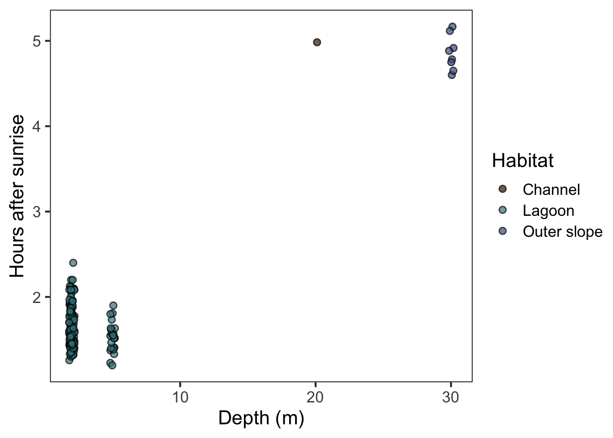
Would you do a regression as in the publication? Why not? Think about indendence of the data! Do you think the habitat could have an impact besides the depth? Is it possible to consider the impact of habitat and depth?
Figure 4B
To better understand the variablity, lets investigate the impact of sex. The authour provided a more detailed dataset for this analysis for coral spawning observaitions in Vairao. Load it and have a look at it:
Rows: 151 Columns: 7
── Column specification ────────────────────────────────────────────────────────
Delimiter: ","
chr (3): site, sex, spawning
dbl (3): colony, h_after_sunrise, sst
date (1): date
ℹ Use `spec()` to retrieve the full column specification for this data.
ℹ Specify the column types or set `show_col_types = FALSE` to quiet this message.
Now, plot it as follows:
ggplot(data = dat_colony, aes(x = sex, y = h_after_sunrise, fill = sex)) +geom_violin(alpha = .7, col =NULL) +geom_jitter(shape =21, width = .2, alpha = .7) +labs(y ="Hours after sunrise", x =NULL) +scale_fill_manual(values =c("#FFA500", "#551A8B")) +coord_flip() +theme_test(base_size =16) +theme(legend.position ="none")
Warning in geom_violin(alpha = 0.7, col = NULL): Ignoring empty aesthetic:
`colour`.
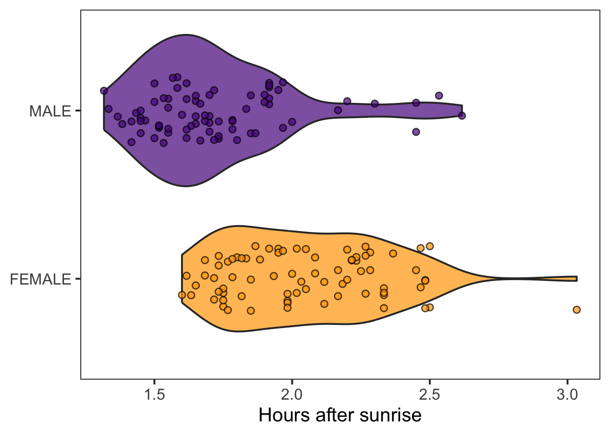
How would you analyse this data? What type of model woudl you use? Try it out, you know the process by now:
glm_sex <-glm(h_after_sunrise ~ sex, data = dat_colony, family =Gamma())check_model(glm_sex)
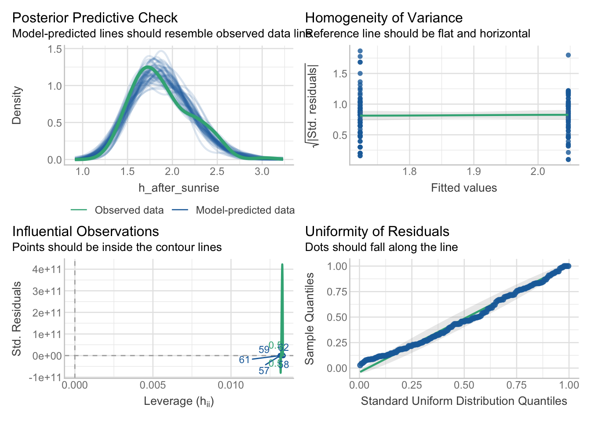
anova(glm_sex)
Analysis of Deviance Table
Model: Gamma, link: inverse
Response: h_after_sunrise
Terms added sequentially (first to last)
Df Deviance Resid. Df Resid. Dev F Pr(>F)
NULL 150 4.2478
sex 1 1.1203 149 3.1275 49.93 5.698e-11 ***
---
Signif. codes: 0 '***' 0.001 '**' 0.01 '*' 0.05 '.' 0.1 ' ' 1
pred_glm_sex <-estimate_means(glm_sex)
We selected `by=c("sex")`.
If you’re happy with the model, predict the results and add mean and CI to the visualistaion from above:
Warning in geom_violin(alpha = 0.7, col = NULL): Ignoring empty aesthetic:
`colour`.
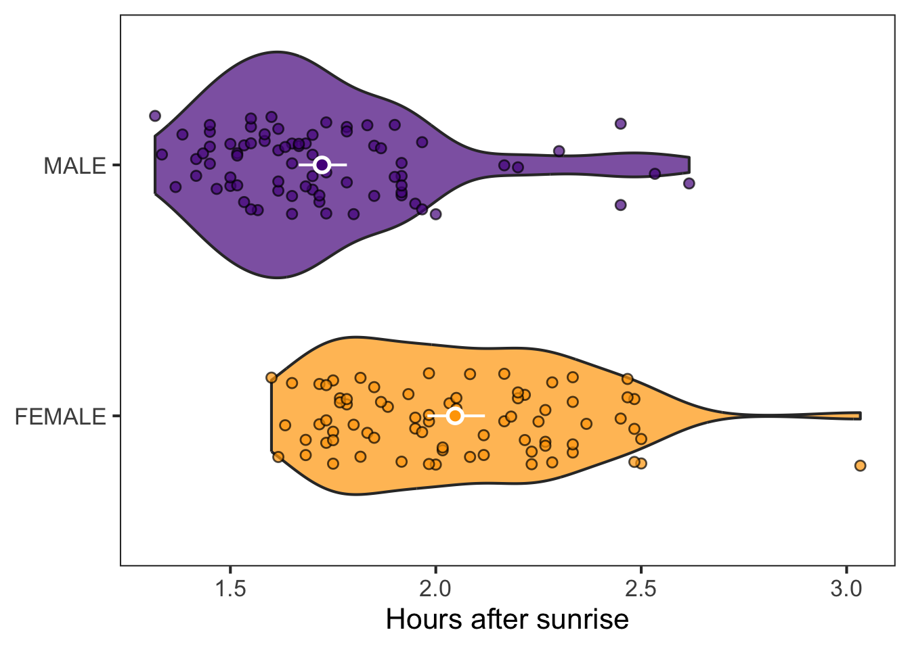
How much time lays between the mean male and femal spawning start? Use estimate_contrasts():
estimate_contrasts(glm_sex, p_adjust ="tukey")
We selected `contrast=c("sex")`.
Marginal Contrasts Analysis
Level1 | Level2 | Difference | SE | 95% CI | t(149) | p
----------------------------------------------------------------------
MALE | FEMALE | -0.32 | 0.05 | [-0.42, -0.23] | -7.02 | < .001
Variable predicted: h_after_sunrise
Predictors contrasted: sex
p-value adjustment method: Tukey
Contrasts are on the response-scale.
Figure 2F
As you see, there is a difference, but still a lot of variablitiy. Maybe that has to do with the water temperature (sst)? As always, start with a plot. Use sst as x axis , h_after_sunrise as y axis, and different colours for sex:
ggplot(data = dat_colony, aes(x = sst, y = h_after_sunrise, fill = sex)) +geom_point(shape =21) +labs(y ="Hours after sunrise", x ="SST (°C)", fill ="Sex") +scale_fill_manual(values = col_sex) +theme_test(base_size =16)
If you’re happy with your model, add the regressio line and CI to the plot above. Do so as before by first creating a data frame with the predictions using estimate_relation():
pred_glm_sst_sex <-estimate_relation(glm_sst_sex)ggplot(data = dat_colony, aes(x = sst, y = h_after_sunrise, fill = sex)) +geom_ribbon(data = pred_glm_sst_sex,aes(y =NULL, ymin = CI_low, ymax = CI_high),show.legend = F,alpha = .3 ) +geom_point(shape =21) +geom_line(data = pred_glm_sst_sex,aes(y = Predicted, col = sex),show.legend = F ) +labs(y ="Hours after sunrise", x ="SST (°C)", fill ="Sex") +scale_fill_manual(values = col_sex) +scale_colour_manual(values = col_sex) +theme_test(base_size =16)
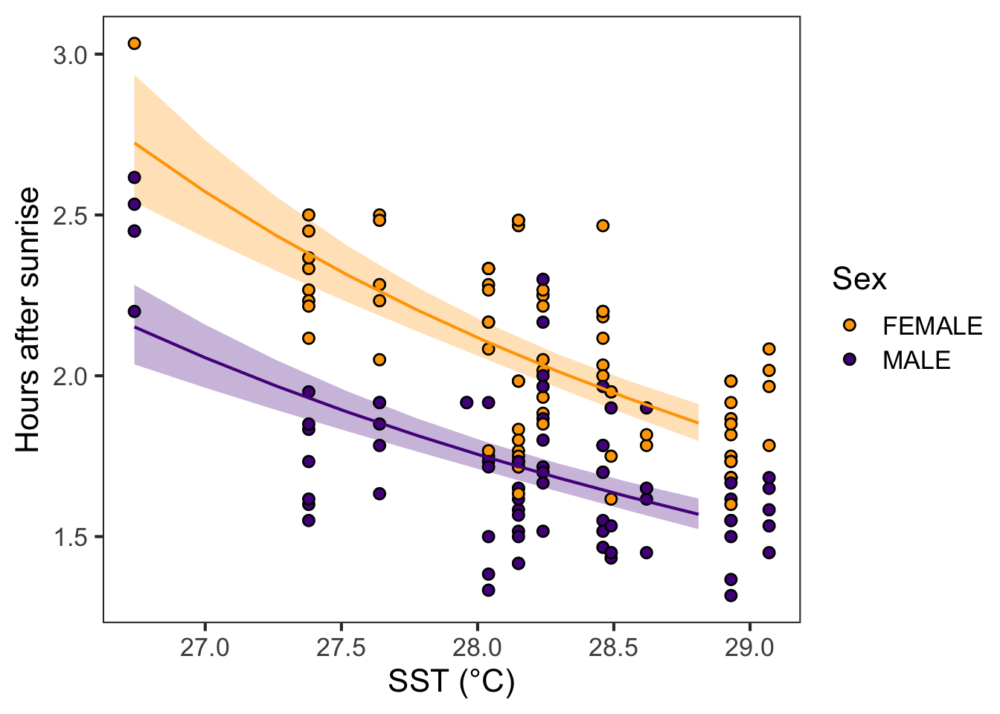
And how much does the spawnign time differ between male and female corals?
estimate_contrasts(glm_sst_sex)
We selected `contrast=c("sex")`.
Marginal Contrasts Analysis
Level1 | Level2 | Difference | SE | 95% CI | t(148) | p
----------------------------------------------------------------------
MALE | FEMALE | -0.34 | 0.03 | [-0.41, -0.27] | -9.85 | < .001
Variable predicted: h_after_sunrise
Predictors contrasted: sex
Predictors averaged: sst (28)
p-values are uncorrected.
Contrasts are on the response-scale.
Marginal Contrasts Analysis
Level1 | Level2 | sst | Difference | SE | 95% CI | t(148) | p
----------------------------------------------------------------------------
MALE | FEMALE | 27 | -0.52 | 0.06 | [-0.63, -0.40] | -8.77 | < .001
MALE | FEMALE | 28 | -0.36 | 0.04 | [-0.44, -0.29] | -9.79 | < .001
MALE | FEMALE | 29 | -0.27 | 0.03 | [-0.32, -0.21] | -9.73 | < .001
Variable predicted: h_after_sunrise
Predictors contrasted: sex
p-values are uncorrected.
Contrasts are on the response-scale.
References
Moritz C, et al. (2025). Shining a light on daytime coral spawning synchrony across oceans. Global Ecology and Biogeography, 34(3):e70072. https://doi.org/10.1111/geb.70072